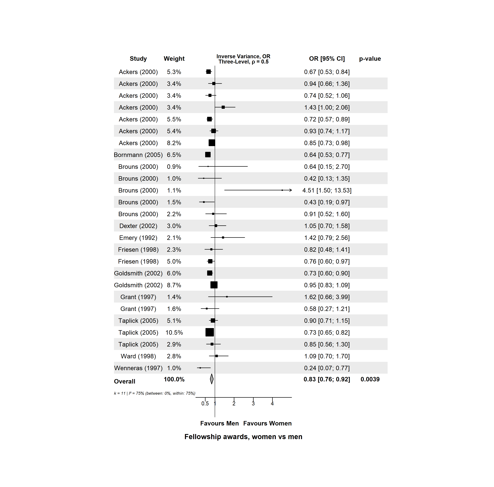
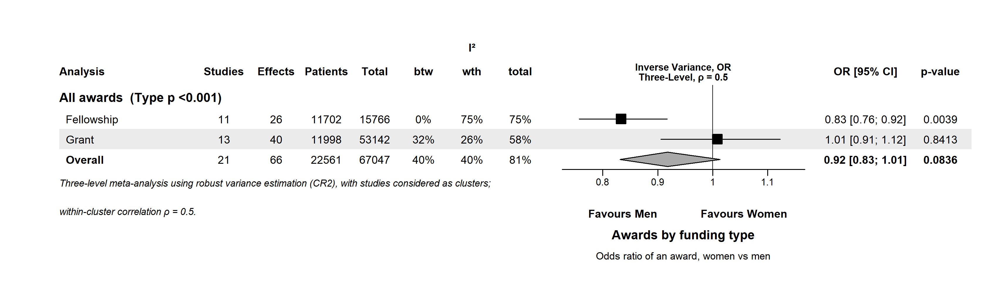

From an Excel sheet to three-level meta-analysis plots in four steps
# install once install.packages("remotes") remotes::install_github("vanioljantunes/meta3l", subdir = "meta3l") # load every session library(meta3l)
meta3L() and the *3L() familyescalc, vcalc, rma.mv), installed with meta3lEvery user function ends in 3L, so loading
metafor or meta before or after meta3l never hides one of
them. Updating meta3l in an open session? Run unloadNamespace("meta3l")
before install_github(), then library(meta3l) again.
| Women | Men | ||||
|---|---|---|---|---|---|
| studlab | type | event.e | n.e | event.c | n.c |
| Ackers (2000) | Fellowship | 139 | 711 | 274 | 1029 |
| Ackers (2000) | Fellowship | 45 | 258 | 166 | 908 |
| studlab | side | mean.e | sd.e | n.e | mean.c | sd.c | n.c |
|---|---|---|---|---|---|---|---|
| Deng, 2024 | right | 77.0 | 49.8 | 20 | 24.7 | 7.1 | 20 |
| Deng, 2024 | left | 82.2 | 62.1 | 20 | 24.4 | 7.8 | 20 |
studlabthe study (cluster): rows with the same label are one study
.e / .cexperimental and control group; one group: event, n
side, typeany extra column can be a subgroup or a moderator
# every sheet into a named list; file picker if no path ma <- read_multisheet_excel("DATA EXTRACTION.xlsx") names(ma) # author + year columns become studlab automatically; # plots are saved next to the workbook d <- ma[["Outcome_awards"]]
No file yet? The example below uses dat.bornmann2007 from the
metadat package (installed with metafor): 66 odds ratios of women vs men
being awarded a grant or fellowship, nested in 21 studies.
studlab. meta3l models that dependence; do not average
the rows yourself.escalc, so each row needs means,
SDs and n (or events and n). Clean the data in the sheet, not in code.# a. three-level model: effects nested in studies r <- meta3L(d, slab = "studlab", measure = "OR", name = "fellowships", group.e = "Women", group.c = "Men") r # OR, 95% CI (CR2), I2 between / within # b. forest plot, saved as fellowships_forest.png forest3L(r) forest3L(r, file = NULL) # on screen instead # c. sensitivity: drop one study / one effect loo_cluster3L(r) loo_effect3L(r) # d. funnel + asymmetry test (10+ studies) funnel3L(r)

# all 66 awards, fellowships and grants r_all <- meta3L(d_all, slab = "studlab", measure = "OR") # subgroup: categorical moderator, Wald + LR test moderator3L(r_all, subgroup = "type") forest_subgroup3L(r_all, subgroup = "type") # meta-regression: continuous moderator bubble3L(r_all, mod = "year") # one summary forest, broken down by type mb <- metabind3L(`All awards` = r_all, subgroup = "type") forest3L(mb, analysis.lab = "Analysis") # several outcomes (regions, scales) in one figure forest3L(metabind3L(Putamen = r_put, Caudate = r_cau))
moderator3L() fits one model with the subgroup as a moderator and shared
variance components. In the summary forest, the p next to the analysis name is the
test for subgroup differences.patients.by = "intervention" so both groups are counted.
rho = 0.5vcalc(). rho = 0 gives the plain three-level model most papers
report. Say which one you used in the Methods.cluster = "studlab"measure = "OR"PLO, PAS (proportions), SMD,
MD, RR, OR. Results come back on the natural
scale: proportions as 0 to 1, ratios as ratios.file, formatfile = NULL: the plot is drawn on screen and
nothing is written. Give a path to save, or file = character(0) for a
PNG named after name in getOption("meta3l.mwd").
format = "pdf" for vector output.